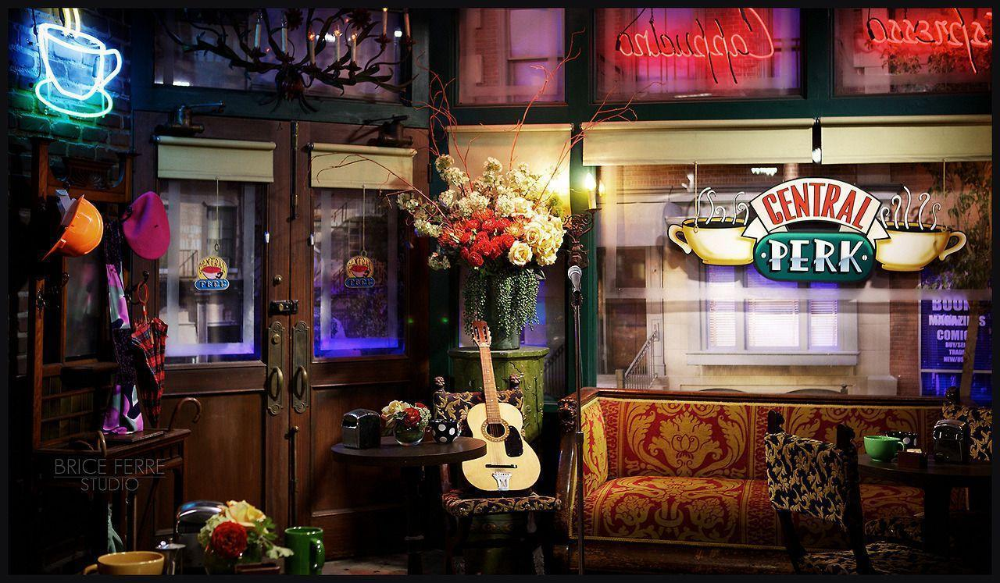

Similar reads



Friends' Joey was the Italian food-loving pal who loved meat trifle and the Joey Special, so it makes sense he'd have lots of good lines about food.
Nine out of 10 iconic food moments in Friends are about Joey Tribbiani. The guy grew up in an Italian household in Queens, meaning he was no stranger to delicious Mediterranean dishes. He loved his Joey Special (two pizzas), refused to eat canapés at Ross's rehearsal dinner in London, and cooked marinara sauce when upset about his acting career.
Joey was food motivated, and his friends knew that about him. If Rachel wanted to get her point across, she knew all she had to do was pass him a meatball sandwich. It's no surprise that the character who carried a fork in his pocket has said some laughable things that showcased his love affair with food.
After Rachel confirms her ex-flame Joey indeed has matured, Phoebe sets him up with a friend named Sarah. While Joey and Sarah's first date isn't exactly a hit, their second date goes from bad to worse. He stops her from taking a bite of his stuffed clams and in the process drops the plate onto the ground.
Things take a turn when Joey gets served an unappetizing cheesecake with raspberry coulis and Sarah, the delicious chocolate torte. "I'm so stupid ordering a cheesecake, trying to be healthy," says Joey as he shoves the plate aside.
How does Joey get Monica to cook him an entire Turkey for Thanksgiving? He uses his Tribbiani heritage to profess his love for food. He tells her about the significance of cooking a turkey dinner on the holiday. "You can't have Thanksgiving without turkey. That's like Fourth of July without apple pie, or Friday with no two pizzas," Joey exclaims.
Joey promises Monica not to worry about the leftovers and makes quite a case for himself when he says: "That's right. Because I'm a Tribbiani. This is what we do. I mean, we may not be great thinkers or world leaders. We don't read a lot or run very fast but damn it, we can eat!"
On the actual day of Thanksgiving, Joey waltzes into Monica's apartment with a bag of chips in his hand. When she questions him about eating outside of the main meal and not saving room for turkey, he educates her about the digestive process: "Let me explain to you how the human body works. I have to warm my stomach first. Eating chips is like stretching."
As Joey concludes his lesson about the human digestive system, he assuringly adds, "Don't worry, Tribbianis never get full."
Of all of the wedding tasks Monica could have delegated to Joey, she lets him choose appetizers. The job was to narrow down 12 items to six. "This is impossible, Monica. Why don't you just pick all 15?" he said, while making more additions to the list.
To make matters worse, Joey was looking for a completely different kind of food, written down as "peanut-butter fingers." When Monica enquired about those, he mimed dipping his two fingers into a jar of peanut butter, scooping some out, and licking the butter off.
"Remember when you were a kid and your mom would drop you off at the movies with a jar of jam and a little spoon?" Joey dreamily asks as he recalls events from his childhood.
In "The One with the Jam," Monica makes huge quantities of jam as part of her "Jam Plan," which she devises to get over Richard. Joey eats the jam straight out of the jar, and as if that wasn't bad enough, he smears it all over his face.
Never call back your dates, but never hang up on a pizzeria, either. In "The One With Ross' Step Forward," Joey gets mad at Rachel because she hangs up on a pizza place.
"You hung up on the pizza place? I don't hang up on your friends!" he angrily asks. Given how obsessed Joey was with the New York specialty, he'd totally be in trouble if he wasn't friends with the pizza guys!
Joey knows he cannot afford to waste food, especially at a time of unemployment. However, he took the whole thing a little too far by eating almost everything (including a questionable thing in an old brown jar) out of his fridge. He looked visibly sick from eating too much in one sitting.
"Well, the fridge broke, so I had to eat everything. Cold cuts, ice cream, limes," he tells Chandler. While Joey may have been careful not to let the perishable food go bad, he also shamelessly tricked everyone into paying for his broken fridge.
In "The One With the Stoned Guy," Phoebe gets Monica an interview with a massage client who's looking for a head chef for his upcoming restaurant. To get started, Monica prepares a gourmet feast days before the actual interview. She has her friends taste and critique every nuance of flavor in the meals.
When Monica persistently asks Joey to rate her two versions of salmon mousse, the distastefully says, "I don't know. We're talking about whipped fish, Monica. I'm just happy I'm keeping it down, ya know?"

Joey's dating advice was as bad as his criticism of Monica's food. In the same episode, Ross asked his friends if they knew a good date place in the neighborhood. Joey suggested he take his date to a nearby restaurant to try and score a free steak. "How about Tony's? If you can finish a 32-ounce steak, it's free."
Fortunately, Ross wasn't looking for a free meal and/or a potential way to embarrass himself. Neither did he have the stomach space to carry a giant steak, so he declined Joey's suggestion.
It makes sense that Rachel would be able to count on Joey to love her terrible combination of English trifle and shepherd's pie. In "The One Where Ross Got High," thanks to a cookbook mix-up, Rachel accidentally prepares a meat trifle as a Thanksgiving dessert. It's made of layers of ladyfingers, custard, raspberries, beef sautéed with peas and onions, bananas, and whipped cream. And it only has one layer of jam, much to Joey's chagrin.
To politely get out of eating the dessert, Chandler goes to the balcony, the Gellers, to their daughter's room, and Monica to the bathroom. Ross says the trifle tastes like feet, but Joey loves every layer of it. "What’s Not To Like? Custard? Good! Jam? Good! Meat? Goooooood!”